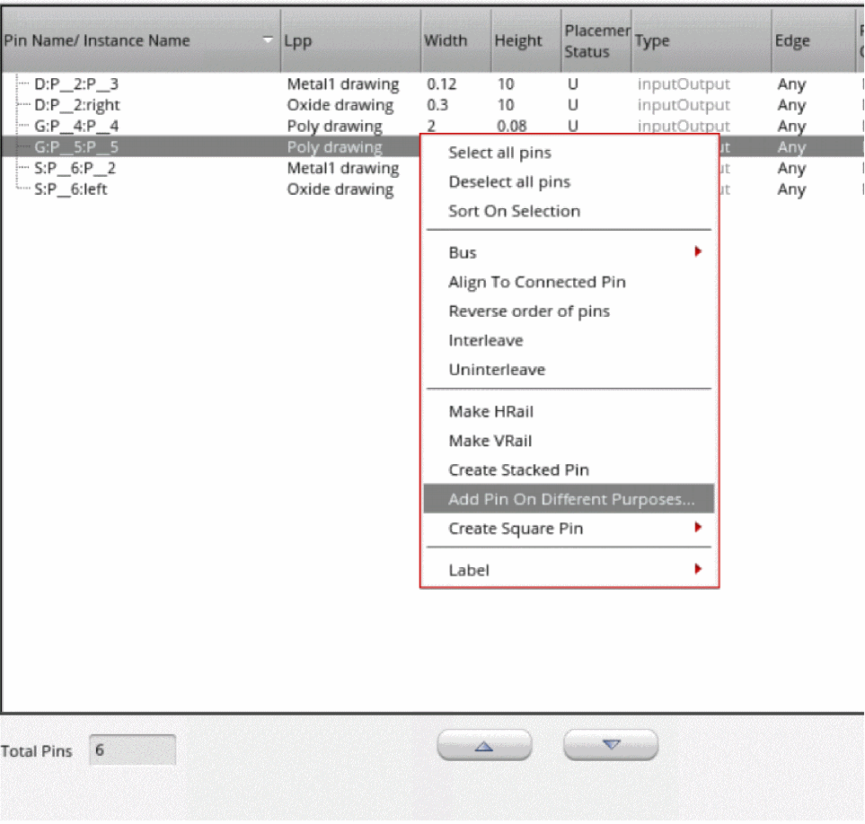
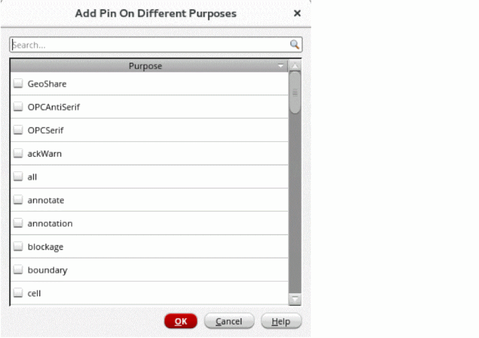
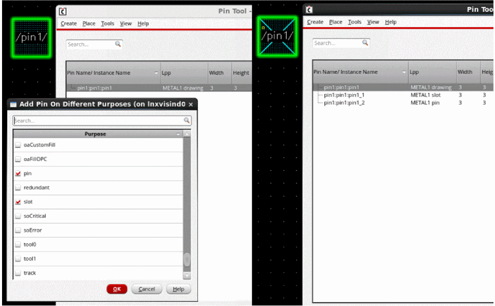

Adding Pins On Different Purposes in the Pin Tool
To add pins on specific purposes for any existing pin:
- Choose Plan – Pin Planning – Pin Tool. The Pin Browser window is displayed.
- Select the required pin in the Pin Browser window.
-
Right-click and choose Add Pin On Different Purposes.
The Add Pin On Different Purposes form is displayed.
 -
Select a purpose in the Add Pin On Different Purposes form. For example, select
pin1in Pin Browser and choosepinandslotpurposes in the Add Pin On Different Purposes form. -
Click OK to reflect the changes in the layout canvas. When you click OK, two additional pins are created below
pin1on the same metal layer withMetal1slotandMetal1pinLPPs.

This functionality can be run on all top-level and level-1 layout pins.
Related Topics
Add Pin On Different Purposes Form
Return to top